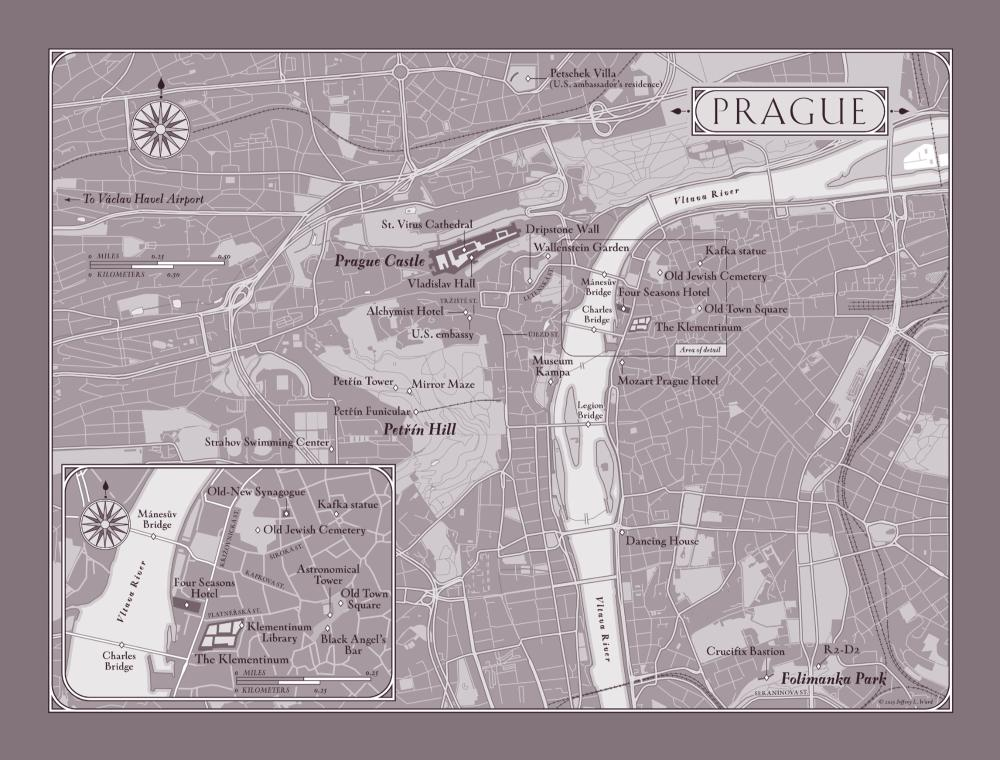
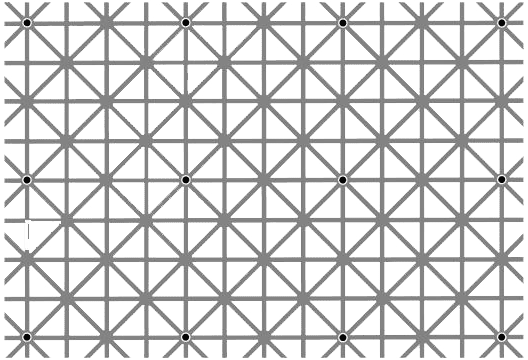

Dedication:
To my editor and best friend, Jason Kaufman,
without whom writing these novels would be nearly impossible...
Epigraph:
The day science begins to study non-physical phenomena, it will make more progress in one decade than in all the previous centuries.
—Nikola Tesla
Map of Prague:

Prologue
I must have died, the woman thought.
She was drifting high above the spires of the old city. Beneath her, the illuminated towers of St. Vitus Cathedral glowed on a sea of twinkling lights. With her eyes, if she still had eyes, she traced the gentle slope of Castle Hill down into the heart of the Bohemian capital, following the labyrinth of winding streets that lay shrouded in a fresh blanket of snow.
Prague.
Disoriented, she strained to make sense of her predicament.
I am a neuroscientist, she reassured herself. I am of sound mind.
That second statement, she decided, was questionable.
The only thing Dr. Brigita Gessner knew for certain at the moment was that she was suspended over her home city of Prague. Her body was not with her. She was without mass and without form. And yet the rest of her, the real her—her essence, her consciousness—seemed to be quite intact and alert, floating slowly through the air in the direction of the Vltava River.
Gessner could recall nothing from her recent past except a faint memory of physical pain, but her body now seemed to consist only of the atmosphere through which she was floating. The sensation was unlike anything she had ever experienced. Against her every intellectual instinct, Gessner could find only one explanation.
I have died. This is the afterlife.
Even as the notion materialized, she rejected it as absurd.
The afterlife is a shared delusion…created to make our actual life bearable.
As a physician, Gessner was intimately familiar with death, and also with its finality. In medical school, while dissecting human brains, Gessner came to understand that all those personal attributes that made us who we are—our hopes, fears, dreams, memories—were nothing but chemical compounds held in suspension by electrical charges in our brains. When a person died, the brain’s power source was severed, and all of those chemicals simply dissolved into a meaningless puddle of liquid, erasing every last trace of who that person had once been.
When you die, you die.
Full stop.
Now, however, as she drifted over the symmetrical gardens of Wallenstein Palace, she felt very much alive. She watched the snow falling around her—or through her?—and oddly, she sensed no cold at all. It was as if her mind were simply hovering in space, with all reason and logic intact.
I have brain function, she told herself. So I must be alive.
All Gessner could conclude was that she was now in the throes of what medical literature termed an OBE—out-of-body experience—a hallucination that occurred when critically injured patients were resuscitated after clinically dying.
OBEs almost always presented in the same manner—the perception that one’s mind had been temporarily separated from its physical body, floating upward and hovering without form. Despite feeling like real experiences, OBEs were nothing but imagined journeys, usually triggered by the effects of extreme stress and hypoxia on the brain, sometimes in conjunction with emergency room anesthetics like ketamine.
I am hallucinating these images, Gessner assured herself, gazing down at the dark curve of the Vltava River snaking through the city. But if this is an OBE…then I must be in the process of dying.
Surprised by her own calm, Gessner tried to remember what had happened to her.
I am a healthy forty-nine-year-old woman…Why would I be dying?
In a blinding flash, a frightening memory materialized in Gessner’s consciousness. She now realized where her physical body was lying at this very instant…and, even more terrifying, what was being done to her.
She was on her back, tightly strapped into a machine she herself had created. A monster stood over her. The creature looked like some kind of primordial man who had crawled out of the earth. His face and hairless skull were coated with a thick layer of filthy clay, cracked and fractured like the surface of the moon. Only his hate-filled eyes were visible behind his earthen mask. Crudely etched across his forehead were three letters in an ancient language.
“Why are you doing this?!” Gessner had screamed in panic. “Who are you?!” What are you?!
“I am her protector,” the monster replied. His voice was hollow, his accent vaguely Slavic. “She trusted you…and you betrayed her.”
“Who?!” Gessner demanded.
The monster spoke a woman’s name, and Gessner felt a stab of panic. How can he possibly know what I have done?!
An icy weight materialized in her arms, and Gessner realized the monster had started the process. An instant later, an unbearable pinpoint of pain blossomed in her left arm, spreading along her median cubital vein, clawing its way sharply toward her shoulder. “Please, stop,” she gasped.
“Tell me everything,” he demanded as the excruciating sensation reached her armpit.
“I will!” Gessner frantically agreed, and the monster paused the machine, halting the pain at her shoulder, though the intense burning remained.
Racked with terror, Gessner spoke as quickly as she could through clenched teeth, frantically revealing the secrets she had vowed to keep. She answered his questions, divulging the disturbing truth about what she and her partners had created deep beneath the city of Prague.
The monster stared down at her from behind his thick clay mask, his cold eyes flashing with comprehension…and hatred.
“You’ve built an underground house of horrors,” he whispered. “You all deserve to die.” Without hesitation, he turned the machine back on and headed for the door.
“No…!” she shrieked as the agony seized her anew, surging through her shoulder and into her chest. “Please don’t leave…This will kill me!”
“Yes,” he said over his shoulder. “But death is not the end. I have died many times.”
With that, the monster evaporated, and Gessner was suddenly hovering again. She tried to shout an appeal for mercy, but her voice was muted by a deafening thunderclap as the sky above her seemed to open wide. She felt herself gripped by an unseen force—a kind of reverse gravity—lifting her higher, dragging her upward.
For years, Dr. Brigita Gessner had derided her patients’ claims of returning from the brink of death. Now she found herself praying that she could join the ranks of those rare souls who had danced to the edge of oblivion, peered into the abyss, and somehow stepped back from the precipice.
I can’t die…I have to warn the others!
But she knew it was too late.
This life was over.
Chapter 1
Robert Langdon awoke peacefully, enjoying the gentle strains of classical music from his phone’s alarm on the bedside table. Grieg’s “Morning Mood” was probably an obvious choice, but he had always considered it the perfect four minutes of music to start his day. As the woodwinds swelled, Langdon savored the uncertainty of not being able to recall quite where he was.
Ah yes, he remembered, smiling to himself. The City of a Hundred Spires.
In the dim light, Langdon surveyed the room’s massive arched window, flanked by an antique Edwardian dresser and an alabaster lamp. The plush, hand-knotted carpet was still scattered with rose petals from last night’s turndown service.
Langdon had come to Prague three days earlier and, as he had on previous visits, checked into the Four Seasons Hotel. When the manager insisted on upgrading Langdon’s reservation to the three-bedroom Royal Suite, he wondered if it was due to his own brand loyalty or, more likely, to the prominence of the woman with whom he was traveling.
“Our most celebrated guests deserve our most celebrated accommodation,” the manager had insisted.
The suite included three separate bedrooms with en suite baths, a living room, a dining room, a grand piano, and a central bay window with a lavish arrangement of red, white, and blue tulips—a welcome gift from the U.S. embassy. Langdon’s private dressing room offered a pair of brushed wool slippers monogrammed with the initials RL. Something tells me that’s not Ralph Lauren, he thought, impressed by the personalized touch.
Now, as he luxuriated in bed and listened to the music from his alarm, he felt a tender hand touch his shoulder.
“Robert?” a soft voice whispered.
Langdon rolled over and felt his pulse quicken. She was there, smiling at him, her smoky gray eyes still half-asleep, her long black hair tousled around her shoulders.
“Good morning, beautiful,” he replied.
She reached over and stroked his cheek, the scent of Balade Sauvage still on her wrists.
Langdon admired the elegance of her features. Despite being four years older than Langdon, she was more stunning every time he saw her—the deepening laugh lines, the faint wisps of gray in her dark hair, her playful eyes, and that mesmerizing intellect.
Langdon had known this remarkable woman since his days at Princeton, where she was a young assistant professor while he was an undergrad. His quiet schoolboy crush on her had gone either unnoticed or unrequited, but they’d enjoyed a flirtatious, platonic friendship ever since. Even after her professional career skyrocketed, and Langdon became a high-profile professor known throughout the world, the two of them had kept in casual contact.
Timing is everything, Langdon now realized, still marveling at how quickly they had fallen for each other during this spontaneous business trip.
As “Morning Mood” crescendoed into the full orchestration of the theme, he pulled her close with a strong arm, and she nuzzled into his chest. “Sleep okay?” he whispered. “No more bad dreams?”
She shook her head and sighed. “I’m so embarrassed. That was awful.”
Earlier in the night, she had awoken in terror from an exceptionally vivid nightmare, and Langdon had needed to comfort her for nearly an hour before she could get back to sleep. The dream’s unusual intensity, Langdon assured her, had been the result of her ill-advised nightcap of Bohemian absinthe, which Langdon had always believed should be served with a disclaimer: Popular during the Belle Epoque for its hallucinogenic properties.
“Never again,” she assured him.
Langdon reached over and turned off the music. “Close your eyes. I’ll be back in time for breakfast.”
“Stay with me,” she teased, holding him. “You can skip one day of swimming.”
“Not if you want me to remain a chiseled younger man,” he said, sitting up with a lopsided grin. Each morning, Langdon had jogged the three kilometers to Strahov Swimming Center for his morning laps.
“It’s dark out,” she pressed. “Can’t you just swim here?”
“In the hotel pool?”
“Why not? It’s water.”
“It’s tiny. Two strokes and I’m finished.”
“There’s a joke there, Robert, but I’ll be kind.”
Langdon smiled. “Funny girl. Go back to sleep, and I’ll meet you for breakfast.”
She pouted, threw a pillow at him, and rolled over.
Langdon donned his faculty-issue Harvard sweats and headed for the door, choosing to take the stairs rather than the suite’s cramped private elevator.
Downstairs, he strode through the elegant hallway that connected the hotel’s Baroque riverfront annex with the building’s lobby. Along the way, he passed an elegant display case marked Prague Happenings, featuring a series of framed posters announcing this week’s concerts, tours, and lectures.
The glossy poster at the center made him smile.
Charles University Lecture Series
Welcomes to Prague Castle
Internationally Acclaimed
Noetic Scientist
Dr. Katherine Solomon
Good morning, beautiful, he mused, admiring the headshot of the woman he had just kissed upstairs.
Katherine’s lecture last night had been standing room only, no small feat considering she had spoken in Prague Castle’s legendary Vladislav Hall—a cavernous, vaulted chamber used during the Renaissance to host indoor jousting competitions with knights and horses in full regalia.
The lecture series was one of Europe’s most respected and always drew accomplished speakers and enthusiastic audiences from around the world. Last night had been no exception, and the packed hall erupted with applause when Katherine was introduced.
“Thank you, everyone,” Katherine said, taking the stage with a confident calm. She wore a white cashmere sweater and designer slacks that fit her flawlessly. “I’d like to begin tonight by answering the one question I am asked almost every day.” She grinned and pulled the microphone off its stand. “What the hell is noetic science?!”
A wave of laughter rolled through the hall as the audience settled in.
“Simply stated,” Katherine began, “noetic science is the study of human consciousness. Contrary to what many believe, consciousness research is not a new science—it is, in fact, the oldest science on earth. Since the dawn of history, we have sought answers to the enduring mysteries of the human mind…the nature of consciousness and of the soul. And for centuries, we have explored these questions primarily through…the lens of religion.”
Katherine stepped off the stage, moving toward the front row of attendees. “And speaking of religion, ladies and gentlemen, I couldn’t help but notice that we have in the audience with us tonight a world-renowned scholar of religious symbology, Professor Robert Langdon.”
Langdon heard murmurs of excitement in the crowd. What the hell is she doing?!
“Professor,” she said, arriving before him with a smile, “I wonder if we might avail ourselves of your expertise for a moment? Would you mind standing up?”
Langdon politely stood, quietly shooting her a you’ll-pay-for-this grin.
“I’m curious, Professor…what is the most common religious symbol on earth?”
The answer was simple, and either Katherine had read Langdon’s article on the topic and knew what was coming, or she was about to be very disappointed.
Langdon accepted the microphone and turned to face the sea of eager faces, dimly lit by chandeliers hanging on ancient iron chains. “Good evening, everyone,” he said, his deep baritone booming through the speakers. “And thank you to Dr. Solomon for putting me on the spot with no warning whatsoever.”
The audience clapped.
“All right then,” he said, “the world’s most common religious symbol? Does anyone have a guess?”
A dozen hands went up.
“Excellent,” Langdon said. “Any guesses that are not the crucifix?”
Every single hand went down.
Langdon chuckled. “It’s true that the crucifix is extremely common, but it is also a uniquely Christian symbol. There is, in fact, one universal symbol that appears in the artwork of every religion in history.”
The audience exchanged puzzled looks.
“You’ve all seen it many times,” Langdon coaxed. “Perhaps on the Egyptian Horakhty stela?”
He paused.
“How about the Buddhist Kanishka casket? Or the famed Christ Pantocrator?”
Silence. Dead stares.
Oh boy, Langdon thought. Definitely a science crowd.
“It also appears in hundreds of the most celebrated Renaissance paintings—Leonardo da Vinci’s second Virgin of the Rocks, Fra Angelico’s The Annunciation, Giotto’s Lamentation, Titian’s Temptation of Christ, and countless depictions of Madonna and Child…?”
Still nothing.
“The symbol I’m referring to,” he said, “is the halo.”
Katherine smiled, apparently knowing this would be his answer.
“The halo,” Langdon continued, “is the disk of light that appears over the head of an enlightened being. In Christianity, halos hover over Jesus, Mary, and the saints. Going further back, a sun disk hovered over the ancient Egyptian god Ra, and in Eastern religions a nimbus halo appeared over the Buddha and the Hindu deities.”
“Wonderful, thank you, Professor,” Katherine said, reaching for the microphone, but Langdon ignored her and pivoted away playfully—a touch of payback. Never ask an historian a question you don’t want answered fully.
“I should add,” Langdon said as the crowd laughed appreciatively, “that halos come in all shapes, sizes, and artistic representations. Some are solid gold disks, some are transparent, and some are even square. Ancient Jewish scripture describes Moses’s head as being surrounded by a ‘hila’—the Hebrew word for ‘halo’ or ‘emanation of light.’ Certain specialized forms of halos have rays of light emanating from them…glowing spines that radiate outward in all directions.”
Langdon turned back to Katherine with a devious smile. “Perhaps Dr. Solomon knows what this type of halo is called?” He tipped the mic to her.
“A radiant crown,” she said without missing a beat.
Someone did her reading. Langdon brought the mic back to his lips. “Yes, the radiant crown is a particularly significant symbol. It appears throughout history adorning the heads of Horus, Helios, Ptolemy, Caesar…and even the towering Colossus of Rhodes.”
Langdon gave the crowd a conspiratorial grin. “Few people realize this, but the most photographed object in all of New York City happens to be…a radiant crown.”
Puzzled looks, even from Katherine.
“Any guesses?” he asked. “None of you has ever photographed the radiant crown that hovers three hundred feet above New York Harbor?” Langdon waited as the murmur of revelation grew in the crowd.
“The Statue of Liberty!” someone called out.
“Exactly,” Langdon said. “The Statue of Liberty wears a radiant crown—an ancient halo—that universal icon we have used through history to identify special individuals who we believe possess divine enlightenment…or an advanced state of…consciousness.”
As Langdon handed the mic back to Katherine, she was beaming. Thank you, she mouthed to him as he returned to his seat amid applause.
Katherine walked back onto the stage. “As Professor Langdon has just stated so eloquently, humans have been contemplating consciousness for a long time. But even now, with advanced science, we have trouble defining it. In fact, many scientists are afraid even to discuss consciousness.” Katherine glanced around and whispered, “They call it the c-word.”
Scattered laughter rippled through the room again.
Katherine nodded to a spectacled woman in the front. “Ma’am, how would you define consciousness?”
The woman thought a moment. “I suppose…an awareness of my own existence?”
“Perfect,” Katherine said. “And where does that awareness come from?”
“My brain, I guess,” she said. “My thoughts, ideas, imaginations…the brain activity that makes me who I am.”
“Very well said, thank you.” Katherine lifted her gaze back to the audience. “So can we all start by agreeing on the basics? Consciousness is created by your brain—the three-pound bundle of eighty-six billion neurons inside your skull—and therefore consciousness is located inside our heads.”
Nods all around.
“Wonderful,” Katherine said. “We’ve all just agreed on the currently accepted model of human consciousness.” After a beat, she sighed heavily. “The problem is…the currently accepted model is dead wrong. Your consciousness is not created by your brain. And in fact, your consciousness is not even located inside your head.”
A stunned silence followed.
The spectacled woman in the front row said, “But…if my consciousness is not located inside my head…where is it?”
“I’m so glad you asked,” Katherine said, smiling to the assembled crowd. “Settle in, folks. We’re in for quite a ride tonight.”
Rock star, Langdon thought as he walked toward the hotel lobby, still hearing the echoes of Katherine’s standing ovation. Her presentation had been a dazzling tour de force that left the crowd stunned and clamoring for more. When someone asked about her current work, Katherine revealed she had just put the finishing touches on a book that she hoped would help redefine the current paradigm of consciousness.
Langdon had helped Katherine secure a publishing deal, although he had yet to read her manuscript. She had revealed enough of its contents to leave Langdon enthralled and eager to read, but he sensed she had kept all the most shocking revelations to herself. Katherine Solomon is never short on surprises.
Now, as he neared the hotel lobby, Langdon suddenly recalled that Katherine was slated for an 8 a.m. meeting this morning with Dr. Brigita Gessner—the eminent Czech neuroscientist who had personally invited Katherine to speak at the lecture series. Gessner’s invitation had been generous, and yet after meeting the woman last night following the event and finding her insufferable, Langdon now secretly hoped Katherine would oversleep and opt for breakfast with him instead.
Pushing it from his thoughts, he entered the lobby, enjoying the fragrance of the extravagant bouquets of roses that always graced the main entrance. The scene that greeted him in the lobby, however, was far less welcoming.
Two black-clad police officers were stalking intently through the open space, working a pair of German shepherds. Both dogs wore bulletproof vests marked Policie and were sniffing around as if searching for…something.
That doesn’t look good. Langdon went over to the front desk. “Is everything okay?”
“Oh, heavens yes, Mr. Langdon!” The immaculately dressed manager nearly curtsied as he rushed out to greet Langdon. “All is perfection, Professor. A minor issue last night, but a false alarm,” he assured, shaking his head dismissively. “Just taking precautions. As you know, security is a top priority here at the Four Seasons Prague.”
Langdon eyed the policemen. Minor issue? These guys hardly looked minor.
“Are you off to the swimming club, sir?” the manager asked. “Shall I call you a car?”
“No thanks,” Langdon replied, heading for the door. “I’ll jog over. I like the fresh air.”
“But it’s snowing!”
The native New Englander glanced outside at the faint skittering of snowflakes in the air and gave the manager a smile. “If I’m not back in an hour, send one of those dogs to dig me out.”
Chapter 2
The Golěm hobbled through the snow, the hem of his long black cape dragging through the dirty slush that covered Kaprova Street. Hidden beneath the cloak, his massive platform boots felt so heavy he could barely lift his legs. On his face and skull, a thick layer of clay tightened in the cold air.
I must get home.
The Ether is gathering.
Fearing the Ether might overtake him, The Golěm reached into his pocket and grasped the small metal rod he kept with him at all times. He raised the object to his head and pressed it hard against the top of his skull, rubbing it in small circles on the dried clay.
Not yet, he incanted silently, closing his eyes.
The Ether dispersed, at least for the moment, and he placed the rod back into his pocket and pushed onward.
A few more blocks, and I can Release.
The Old Town Square—known in Prague as Staromák—was deserted this dark morning, save for a pair of tourists clutching burnt-sugar pastries and gazing up at the famous medieval clock. Every hour, the ancient timepiece presented its “Walk of the Apostles,” a juddering procession of saints that mechanically rotated in and out of view through two small windows in the clock face.
Circling aimlessly since the fifteenth century, The Golěm thought, and still it attracts sheep to observe the spectacle.
As The Golěm passed the couple, they glanced over at him and spontaneously gasped, stepping backward. He was well accustomed to this reaction from strangers. It reminded him he had a physical form, even if they could not see what he truly was.
I am The Golěm.
I am not of your realm.
The Golěm felt untethered at times, as if he might float away, and he enjoyed draping his mortal shell in heavy robes. The weight of the cloak and platform boots accentuated the pull of gravity, anchoring him to the earth. His clay-smeared head and hooded cloak made him a frightening oddity, even in Prague, where costumes at night were common.
But what made The Golěm a truly arresting vision were the three ancient letters emblazoned on his forehead…etched into the clay with a palette knife.
אמת
The three Hebrew letters—aleph, mem, tav—from right to left, spelled EMET.
Truth.
Truth is what had brought The Golěm to Prague. And Truth is what Dr. Gessner had revealed to him earlier tonight—a detailed confession of the atrocities that she and her partners had committed deep beneath Prague. Their crimes were abhorrent, and yet they paled in comparison to what was planned for the near future.
I will destroy it all, he told himself. Reduce it to rubble.
The Golěm pictured their dark creation…obliterated…a smoldering hollow in the earth. Although it was a daunting task, he was confident he could accomplish it. Dr. Gessner had revealed all he needed to know.
I need to act quickly. The window of opportunity is slim, he told himself, the plan already crystallizing in his mind.
The Golěm turned southeast now, moving away from the square, finding the narrow alleyway that wound toward his flat. The Old Town neighborhood was a labyrinth of passageways known for its vibrant nightlife and distinctive pubs—Týnská Literary Café for writers and intellectuals, Anonymous Bar for hackers and intrigue seekers, and Hemingway Bar for sophisticates and cocktail connoisseurs. Of course, the Sex Machines Museum was open late and drew crowds of gawkers well into the night.
As The Golěm snaked through the maze of alleys, he found himself thinking not about the terrors he had just inflicted on Dr. Brigita Gessner, nor of the shocking information he had extracted—but rather thinking of her.
He was always thinking of her.
I am her protector.
She and I are two entangled particles, entwined forever.
His sole purpose on this earth was to shelter her, and yet she knew nothing of his existence. Even so, his time of service to her had been an honor. To bear the burdens of another was the noblest of callings; but to do so anonymously, without any recognition at all…that was a truly selfless act of love.
Guardian angels take many forms.
She was a trusting person who unknowingly was caught in a world of dark science. She did not see the sharks circling. The Golěm had killed one of those sharks tonight, but now there was blood in the water. Powerful forces would soon be surfacing from the deep to find out what had transpired…to ensure the secrecy of their creation.
You will be too late, he thought. Their underground house of horrors would soon collapse beneath the weight of its own sin…a victim of its own ingenuity.
As he pressed on through the snowy streets, The Golěm felt the Ether return, thickening around him. Again he rubbed the metal wand to his head.
Soon, he promised.
In London, an American named Mr. Finch polished a pair of Cartier Panthère glasses and paced his luxurious office. His impatience had turned to deep concern.
Where the hell is Gessner? Why can’t I reach her?
He knew the Czech neuroscientist had attended Katherine Solomon’s lecture last night at Prague Castle, and afterward she had sent Finch an alarming message regarding the book Solomon would soon publish. It was not good news. Gessner had promised to call Finch with an update.
So far, Finch had not heard a word, and it was nearly dawn.
He had messaged and called her repeatedly with no response.
It’s been six hours…Gessner is meticulous—this is patently unlike her.
Having ascended to the pinnacle of his profession by following his gut, Mr. Finch had learned to listen to his intuition. Unfortunately, his instincts were now telling him that something in Prague had gone dangerously awry.
Chapter 3
The winter air felt crisp and invigorating as Robert Langdon ran southward along Křižovnická Street, his long strides leaving a lone trail of footprints in the sidewalk’s thin covering of snow.
The city of Prague had always felt enchanted to him. It was a moment frozen in time. Having suffered far less damage than other European cities in World War II, the historical capital of Bohemia enjoyed a dazzling skyline that still sparkled with all its original architecture—a uniquely varied and pristine sampling of Romanesque, Gothic, Baroque, Art Nouveau, and Neoclassical designs.
The city’s nickname—Stověžatá—literally meant “with a hundred spires,” although the actual number of spires and steeples in Prague was closer to seven hundred. In the summer, the city occasionally illuminated them with a sea of green floodlights; the awe-inspiring effect was said to have inspired Hollywood’s depiction in The Wizard of Oz of the Emerald City—a mystical destination that, like Prague, was believed to be a place of magical possibilities.
As Langdon jogged across Platnéřská Street, he felt as if he were running through the pages of a history book. The colossal facade of Prague’s Klementinum loomed on his left, a two-hectare complex that housed the viewing tower used by the astronomers Tycho Brahe and Johannes Kepler, as well as an exquisite Baroque library holding more than twenty thousand volumes of ancient theological literature. This library was Langdon’s favorite room in Prague, and possibly in all of Europe. He and Katherine had just visited its newest exhibit yesterday.
Now, as he turned right at the Church of St. Francis of Assisi, he could see, directly ahead of him, the east entrance to one of the city’s most famous landmarks, illuminated in the amber glow of Prague’s rare gas streetlamps. Hailed by many as the most romantic bridge in the world, Karlův most—Charles Bridge—was constructed of Bohemian sandstone and lined on both sides by thirty statues of Christian saints. Stretching more than half a kilometer across the placid Vltava River, protected on both ends by massive guard towers, the bridge had once served as a critical trade route between Eastern and Western Europe.
Langdon ran through the archway in the east tower, emerging to see an untarnished blanket of snow stretching out before him. The bridge was for pedestrians only, and yet, at this hour, there was not a single footprint.
I’m alone on Charles Bridge, Langdon thought. A life moment. He had once been similarly alone in the Louvre with the Mona Lisa, but those circumstances had been far less pleasant than this.
Langdon’s strides lengthened as he settled into his pace, and by the time he reached the other side of the river, he was running effortlessly. To his right, illuminated high against the dark skyline, shone the city’s most beloved glittering gem.
Prague Castle.
It was the largest castle complex in the world, stretching more than half a kilometer from its western gate to its eastern tip, and had a footprint of nearly five million square feet. The outer walls enclosed six formal gardens, four discrete palaces, and four Christian churches, including the magnificent St. Vitus Cathedral, in which the Crown Jewels of Bohemia were safeguarded, along with the crown of Saint Wenceslas, the beloved ruler commemorated in the popular Christmas carol.
As Langdon passed beneath the west tower of Charles Bridge, he laughed to himself, thinking of the event at Prague Castle the night before.
Katherine can be persistent.
“Come to my lecture, Robert!” she had said when she had called him two weeks earlier to coax him to Prague. “It’s perfect—you’ll be on winter break. The trip is my treat.”
Langdon considered her playful offer. The two of them had always enjoyed a platonic flirtation and mutual respect, and he was inclined to throw caution to the wind and take her up on the spontaneous proposal.
“I’m tempted, Katherine. Prague is magical, but really—”
“Let me cut to it,” she blurted. “I need a plus-one, okay? There, I said it. I need a date for my own lecture.”
Langdon burst out laughing. “That’s why you called? A world-famous scientist…and you need an escort?”
“Just some arm candy, Robert. There’s a black-tie sponsors dinner, and then I’m speaking in some famous hall—Vlad…something.”
“Vladislav Hall?! In Prague Castle?”
“That’s it.”
Langdon was impressed. The quarterly Charles University Lecture Series was one of Europe’s most prestigious gatherings, but it was apparently more highbrow than he imagined.
“Are you sure you want a symbologist on your arm at a black-tie dinner?”
“I asked Clooney, but his tux is at the dry cleaner’s.”
Langdon groaned. “Are all noeticists this tenacious?”
“Only the good ones,” she said. “And I’ll take that as a yes.”
What a difference two weeks make, Langdon mused, still smiling as he reached the other side of Charles Bridge. Prague certainly had lived up to its reputation as a magical city…a catalyst with ancient powers. Something has happened here…
Langdon would never forget his first day with Katherine in this mystical place—losing themselves in a labyrinth of cobblestone streets…dashing hand in hand through a misty rain…taking cover beneath an archway of Kinský Palace in Old Town Square…and there, breathless, in the shadows of the Clock Tower…their very first kiss, which felt surprisingly effortless after decades of friendship.
Whether because of Prague, perfect timing, or the guidance of some unseen hand, Langdon had no idea, but it had sparked an unexpected alchemy between them, which was growing stronger with every passing day.
Across town, The Golěm turned a final corner and arrived wearily at his building. He unlocked the outer door and stepped into the meager foyer of his domicile.
The entryway was dark, but he chose not to turn on the light. Instead, he slipped through a narrow passage to a hidden staircase, which he climbed in obscurity, gripping the railing for guidance. His legs ached, protesting as he ascended, and he was grateful when he finally reached his apartment door. After carefully wiping the snow from his boots, The Golěm unlocked the door and stepped inside.
His flat was veiled in complete darkness.
Exactly as I created it.
Its interior walls and ceilings were painted solid black, and the windows were shrouded with heavy drapes. The lacquered floors were already dull and murky and reflected no light, and there were almost no furnishings.
The Golěm threw a master switch, and a dozen black lights illuminated throughout the apartment, radiating a soft purplish glow on those objects that were pale in hue. His home was an otherworldly landscape—ephemeral and luminescent—and it instantly relaxed him. Moving through this space gave him the sensation of drifting through a deep void…floating from one shimmering object to another.
The absence of broad-spectrum light created a “time-neutral” environment—an atemporal world in which his physical form received no circadian cues. The Golěm’s duties required he keep irregular hours, and the lack of light freed his biorhythms from the influences of conventional time. Predictable schedules were a luxury enjoyed by simpler souls…unburdened souls.
My services are required by her at unexpected times—day and night.
He made his way through the ghostly darkness, entering his dressing room and shedding his cloak and boots. Naked now below the neck, his skin glowed pale in the black light, but he avoided looking at it. His sanctuary intentionally had no mirrors, save the tiny handheld with which he applied the clay to his face.
Seeing his physical shell was always unsettling.
This body is not mine.
I have simply manifested within it.
The Golěm padded barefoot to the bathroom, where he turned on the shower and stepped in. After peeling off his clay-caked skullcap, he closed his eyes, raising his face to the warm stream. The water felt purifying as the dried clay dissolved into dark rivulets that ran down his body and spiraled into the drain.
Once The Golěm felt confident that he had shed all traces of his activities last night, he stepped from the shower and dried himself off.
The Ether was pulling harder at him now, but he did not reach for his wand.
It is time.
Still naked, The Golěm made his way through the darkness to his svatyně—the special room he had created to receive this gift.
In total blackness, he walked to the hemp mattress he kept positioned in the middle of the floor. Respectfully, he lay down, positioning himself naked and supine in the exact center of the mat.
Then he secured the perforated chengbaobaby silicone ball in his mouth…and Released.
Chapter 4
First one here too, Langdon thought, arriving at Strahov Swimming Center just as the attendant was unlocking the building. Langdon knew of few experiences more luxurious than having an entire twenty-five-meter pool to himself. He found his rented locker, slid into his Speedo, took a quick shower, grabbed his Vanquisher goggles, and made his way to the pool.
The overhead fluorescent lights were just warming up, and the room was still mostly dark. Langdon stood with his toes over the edge of the pool, gazing out at the smooth expanse of water, which looked like a massive black mirror.
The Temple of Athena, he mused, recalling how ancient Greeks had practiced catoptromancy by gazing into dark pools of water to glimpse their future. He pictured Katherine asleep in their hotel room and wondered if perhaps she was his future. The notion was both unnerving and exciting for the consummate bachelor.
Langdon pulled the goggles over his eyes, took a deep breath, and launched himself out over the water, slicing through the surface. Underwater, he held his glide for two seconds and then did ten meters of dolphin kick before emerging into freestyle.
Focusing on the cadence of his breathing, Langdon drifted into the semi-meditative state that swimming always afforded him. His muscular frame relaxed, and his body became streamlined and lithe, powering forward through the darkness at an impressive pace for a man in his fifties.
Normally, swimming emptied Langdon’s mind completely, but this morning, even after four laps, his mind was full…replaying moments of Katherine’s compelling lecture last night.
“Your consciousness is not created by your brain. In fact, your consciousness is not even located inside your head.”
Those words had piqued the curiosity of everyone present, and yet Langdon knew her lecture had barely scratched the surface of what would be included in her upcoming book.
She claims to have discovered something incredible.
Katherine’s discovery—whatever it might be—was a secret. She had not shared it yet with anyone, including Langdon, though she had alluded to it several times in recent days, confiding in him that the research for her book had led to a stunning breakthrough. After her lecture last night, Langdon felt a growing sense that Katherine’s book might well have explosive potential.
She doesn’t shy away from controversy, Langdon mused, having enjoyed watching her ruffle the feathers of traditionalists in the audience.
“Science has a long history of flawed models,” she had announced, her voice echoing across Vladislav Hall. “The flat-earth theory, the geocentric solar system, the steady-state universe…these are all false, though they were once taken quite seriously and believed to be true. Fortunately, our belief systems evolve when faced with enough inexplicable inconsistencies.”
Katherine grabbed a handheld remote, and the screen behind her sprang to life depicting a medieval astronomical model—the solar system portraying the earth at its center. “For centuries, this geocentric model was accepted as absolute fact. But over time, astronomers noticed planetary motion that was inconsistent with that model. The anomalies became so numerous and glaring that we…” She clicked again. “Built a different model.” The screen now displayed a modern illustration of the solar system with the sun at the center. “This new model explained all the anomalous phenomena, and heliocentricity is now our accepted reality.”
The audience sat quietly as Katherine walked to the front of the stage.
“Similarly,” she said, “there was a time when the suggestion of a round earth was laughable—scientific heresy, even. After all, if the earth were round, wouldn’t the oceans flow off? Wouldn’t many of us be upside down? However, bit by bit, we began seeing phenomena that were inconsistent with the flat-earth model—the earth’s curved shadow in a lunar eclipse, ships departing over the horizon disappearing from bottom to top, and then, of course, Magellan circumnavigating the globe.” She smiled. “Oops. Time for a new model.”
Heads nodded in shared amusement.
“Ladies and gentlemen,” she said, her voice somber, “I believe a similar evolution is now occurring in the field of human consciousness. We are about to experience a sea change in our understanding of how the brain works, the nature of consciousness, and, in fact…the very nature of reality itself.”
Nothing like aiming high, Langdon thought.
“As with all outdated beliefs,” she said, “today’s accepted model of human consciousness now finds itself challenged by a rising tide of phenomena that it simply cannot explain…phenomena that noetic labs around the world have meticulously authenticated, and that humans have witnessed for centuries. Even so, traditionalist science still refuses to deal with the existence of these phenomena or even accept they are real. Instead, they trivialize them as flukes and outliers filed under a dismissive heading—‘Paranormal’—which has become shorthand for ‘not science at all.’”
The comment caused several mutters from the back of the auditorium, but Katherine continued, unfazed. “In fact, you’re all quite familiar with these paranormal phenomena,” she declared. “They go by names like ESP…precognition…telepathy…clairvoyance…out-of-body experiences. Despite being deemed ‘para’-normal, they are, in fact, entirely normal. They occur every day, both in science labs with carefully controlled experiments…and also in the real world.”
The room had now fallen completely silent.
“The question is not if these phenomena are real,” Katherine said. “Science has proven they are. The question is…why do so many of us remain blind to them?”
She pressed a button, and an image materialized on the screen behind her.
The Hermann grid. Langdon recognized the well-known visual illusion in which black dots seemed to appear and disappear depending on where in the diagram you focused.
The audience began to experience the effect, and a murmur of surprise spread across the room.

“I show you this for a simple reason—to remind us that human perception is riddled with blind spots,” Katherine concluded. “Sometimes we’re so busy looking the wrong way…that we don’t see what’s right before our eyes.”
The morning sky was still pitch-dark when Langdon left the swimming center and headed back down the hill. His thirty-minute aquatic meditation had left him feeling tranquil, and his solitary walk back to the hotel was quickly becoming one of his favorite parts of his day. As he neared the river, the digital clock on the tourist information center glowed 6:52 a.m.
Plenty of time, Langdon told himself, still hoping to climb back into bed with Katherine and persuade her to cancel her 8 a.m. meeting with Brigita Gessner. The neuroscientist had essentially browbeaten Katherine into coming to her lab for a tour this morning, and Katherine had been too polite to decline.
When Langdon arrived at Charles Bridge, he saw that the smooth blanket of snow was no longer pristine, now dotted with footprints of other early risers. As he entered the bridge, Judith Tower rose on his right, the lone surviving piece of the original medieval structure. In the distance stood the “new” fourteenth-century guard tower where decapitated heads had once been displayed on spikes as a reminder to anyone who might question the Habsburgs’ rule.
They say you can still hear their moans of pain as you pass.
The word “Prague” literally meant “threshold,” and Langdon always felt like he crossed one each time he came here. For centuries, this magical city had been steeped in mysticism, ghosts, and spirits. Even today, guidebooks claimed the city had a supernatural aura that was palpable to all those who were open to it.
I’m probably not one of them, Langdon knew, although he had to admit Charles Bridge felt otherworldly this morning, with the falling snow casting spectral halos around the gaslights.
For centuries, this city had been Europe’s nexus for the occult. Prague’s King Rudolf II had secretly practiced the transmutational sciences in his underground Speculum Alchemiae. Clairvoyants John Dee and Edward Kelley had traveled here for scrying sessions to conjure spirits and converse with angels. Mysterious Jewish writer Franz Kafka was born and worked here, penning his darkly surreal The Metamorphosis.
As Langdon continued across the bridge, his eye fell on the Four Seasons Hotel in the distance, perched directly on the river, the deep waters of the Vltava lapping at its foundation. Above the glimmering surface, the second-floor windows of their suite were still dark.
Katherine’s still asleep, he thought, not at all surprised considering the nightmare that had kept her awake much of the night.
About a third of the way across the colossal bridge, Langdon passed the bronze statue of St. John of Nepomuk. Murdered on this very spot, he thought with a chill. Ordered by the king to break his vow of confessional secrecy and reveal the queen’s private confessions, the priest had refused, so the king had ordered him tortured and thrown off the bridge.
Langdon was lost in his own thoughts when his attention was drawn to an unusual sight up ahead. Approximately halfway across the bridge, a woman dressed all in black was approaching. Langdon guessed she was returning from a costume party because she was wearing an outlandish headpiece—a kind of tiara with a half-dozen slender black spikes emanating directly from her skull, fanning upward and outward, encircling her head, like a black…
Langdon felt a chill. A radiant crown?
The bizarre coincidence of seeing a radiant crown this morning was startling and a bit unnerving, but Langdon reminded himself that ghoulish costume play was common in Prague.
As she drew closer, though, the scene became stranger. The woman in the spiked halo seemed to be in a trance, walking as if half-dead, her doe eyes staring blankly ahead. Langdon was about to ask if she was okay when he noticed what she was holding in her hand.
The sight stopped him short.
But that’s…impossible!
The woman was clutching a silver spear.
Just like in Katherine’s nightmare…
Langdon eyed the pointed weapon, immediately wondering if maybe now he was dreaming. As the woman drew level with him, Langdon realized he had stopped walking, paralyzed by his own confusion. Snapping out of his stupor, he turned and called to the woman, trying to get her attention.
“Excuse me!” he blurted. “Miss?!”
She never broke stride, as if unable to hear him.
“Hello!” Langdon shouted, standing still, but the woman simply drifted past like an apparition…a blind spirit drawn across the bridge by some unseen force.
Langdon turned to run after her but advanced only two steps before halting in his tracks, this time arrested by a putrid smell.
Wafting in the apparition’s wake was an unmistakable odor.
The smell of…death.
The stench had an instantaneous effect on Langdon. He was flooded with fear.
My God, no…Katherine!
Reacting on pure impulse, Langdon spun away, frantically digging his phone from his pocket while breaking into a full sprint along Charles Bridge. As he ran toward the hotel, he held the phone to his mouth and shouted, “Hey, Siri, call one-one-two!”
By the time the call went through, Langdon had already crossed the bridge and reached Křižovnická Street. “One-one-two,” a voice announced. “What is your emergency?”
“The Four Seasons Prague!” Langdon shouted as he turned left and sprinted along the dark sidewalk toward the hotel. “You need to evacuate! Now!”
“I’m sorry, what is your name please?”
“Robert Langdon, I’m an Am—”
A taxi emerged from a parking garage in front of him, and he collided hard with the side of the car, dropping his phone onto the snowy street. He scooped it up and kept running, but the call had been dropped. It didn’t matter; the entrance of the hotel was right in front of him.
Breathless, he burst into the lobby, spotting the manager and calling to him. “Everyone needs to get out!”
The police officers were gone, but a handful of guests enjoying morning coffee all glanced up in surprise.
“Everyone is in danger!” Langdon shouted again to the manager. “Get out!”
The man rushed over, looking horrified. “Professor, please! What’s wrong?!”
Langdon was already running for the fire alarm on the wall. Without hesitation, he shattered the glass and pulled the lever.
Immediately, alarm bells blared.
Langdon dashed out of the lobby and sprinted the long corridor to the annex where their suite was located. Reaching the rear of the hotel, he skipped the elevator and bounded up two flights of stairs to the private foyer, unlocked the Royal Suite, burst inside, and called wildly into the darkness.
“Katherine! Wake up! The dream you had…!” He flipped on the master light switch and ran to the bedroom. The bed was empty. Where is she?! He ran to the bathroom. Nothing. Desperate, he searched the rest of the suite. She’s not here?!
In that moment, a nearby church bell began to toll mournfully.
The sound filled Langdon with an overwhelming terror. Something told him he would never make it out of the hotel in time. Fearing for his life and acting on adrenaline, he sprinted to the bay window and looked down at the deep waters of the Vltava.
The river’s smooth, dark surface lay directly beneath him.
The bell tolled louder.
He tried to think, but there was no thought, only an overpowering human instinct—survival.
Without hesitation, Langdon yanked open the window and climbed up onto the sill. The blast of cold air and snow rushing past him did nothing to quell his panic.
It’s your only choice.
He stepped to the edge of the windowsill.
Then, taking a deep breath, Langdon launched himself out into the darkness.
Chapter 5
Robert Langdon gasped for breath.
The icy waters of the Vltava River had shocked his system into near paralysis, and as he struggled to stay afloat, he could feel the weight of his wet clothes threatening to drag him under.
Katherine…
Langdon looked up at the second-story window from which he’d leaped. The explosion he had feared was coming…had not occurred. The Four Seasons Hotel was still standing, still very much intact.
In the stark glare of emergency lighting, hotel guests were now flowing out the side exit onto a wide terrace that overlooked the hotel’s mooring docks, which jutted out into the river.
As he fought to tread water, Langdon suddenly realized the current was pulling him away; the hotel dock would be his only chance of climbing out of the water before being carried downstream.
Doing his best to avoid panic, he attempted to freestyle toward the dock, but he could barely lift his arms. His soaking sweatshirt was like an anchor around him. The cold water was already constricting his circulatory system, and Langdon could feel the first warning signs of hypothermia in the pain shooting through his ankles and wrists.
Swim, Robert…
Resorting to an awkward breaststroke, Langdon strained against the current, trying to make his way toward the hotel dock. He glanced beyond it and feared being dragged over the waterfall that was not far downstream—although he knew he would probably be unconscious and submerged long before he went over the edge.
Push, dammit!
As his arms pulled him through the water, Langdon’s mind burned with the image of the ghostly woman wearing the black radiant halo. The headpiece could have been a startling coincidence…but her spear? And the smell of death?
Impossible.
Beyond explanation.
For an instant, Langdon wondered if he was still asleep, trapped in a vivid nightmare like the one Katherine had experienced last night. No. The biting cold and frantic beat of his heart assured him he was awake. As anyone who had plunged through pond ice could attest, the onset of acute hypothermia brought with it a unique succession of mental states—shock, panic, reflection, and finally, acceptance.
Use the panic, he told himself. Swim harder.
Angling across the current, Langdon stroked awkwardly in the direction of the dock, trying to ignore his intensifying pain. With each effort it grew worse, although the blare of the hotel alarm seemed to be growing louder. Closer. His eyes stung in the freezing water, and his vision was beginning to fade.
The dock was close now, a dark mass in the glare of the security lighting, and Langdon urged himself toward it, making a final push. When his hand groped something solid, his numb fingers were barely able to feel the rough wood, much less take hold. He pulled himself hand over hand down the dock to the small metal ladder mounted there. Using every last bit of strength, he pulled himself up, flopping like a deadweight onto the landing, his soaking-wet clothes shedding water all around him.
Langdon lay immobile, shivering and spent, knowing he was still very much in danger.
I’ll freeze quickly out here. I need to get warm.
He crawled to his knees and looked up at the hotel. The terrace was already jammed with guests, many wearing bathrobes, standing in the snow. He turned and looked back toward Charles Bridge, which looked like a postcard, its gas lanterns glowing warmly in the falling snow.
I saw what I saw.
Langdon heard the rapid approach of footfalls on the dock.
“Mr. Langdon!” the hotel manager shouted, arriving wild-eyed. He slipped to a stop on the snow-covered surface. “Are you all right, sir?! What happened here?!”
Langdon nodded. “I…thought…there was…”
“A fire?!”
Convulsing with cold, Langdon shook his head. “No…”
“Then why did you pull the alarm?!” The man’s normally gracious tone was frayed and angry.
“I thought…there was danger.”
“From what?!”
Langdon struggled to prop himself into a sitting position. His head pounded, and he could feel hypothermia setting in.
A hotel security guard sprinted down the dock and joined them. The muscular man reached down and roughly pulled Langdon to his feet, lifting him with a firm grasp beneath his armpits. Langdon was uncertain whether the guard was helping him up or restraining him.
“Why did you pull the alarm, sir?” the manager repeated, staring intently at him.
“I’m sorry…” Langdon replied, his teeth starting to chatter. “I was…confused.”
“Because of the police in the lobby? I told you that was nothing!” The manager seemed barely able to contain himself. “I need to know—is it safe to go back inside?”
Langdon could see guests still flowing from the rear emergency exit, and he could only imagine the chaos at the hotel’s main entrance. I can’t explain this to them. They’ll think I’m mad.
“Professor Langdon,” the manager said, his frustrated tone now turning angrier, “I need an answer! I have four hundred guests standing outside in the snow. Is the building safe? Yes or no! Can our guests return inside?”
Langdon again saw the image of the woman wearing the black radiant crown…the silver spear…and the putrid smell of death. There must be another explanation. The world does not work this way! Get a grip, Robert.
Langdon finally nodded. “Yes…I believe it’s safe. I’m terribly sorry. As I said…I was confus—”
“Vypněte alarm!” the manager said to the guard, who released Langdon abruptly. As Langdon teetered on trembling legs, the guard pulled out a radio and barked orders while the hotel manager placed a call on his mobile.
Within seconds, the alarms fell silent, replaced by the distant wail of approaching emergency vehicles. The manager closed his eyes, took a deep breath, and exhaled slowly through pursed lips. Then he reopened his eyes and calmly brushed the snowflakes from his dark suit.
“Professor Langdon,” he whispered through clenched teeth, “I need to receive the authorities. My security guard will help you to your room. Do not go anywhere. The authorities will need to speak to you.”
Langdon nodded his understanding.
As the manager rushed off, the guard led Langdon through a smaller service entrance to a back staircase. Langdon’s sneakers squished with every step as the two men made their way up to the Royal Suite. The door was open, and the lights were on, exactly as Langdon had left it.
“Zůstaňte tady,” the guard commanded, pointing into the room.
Langdon didn’t speak Czech, but the guard’s body language was crystal clear. Enter and do not come out. Langdon nodded and entered the suite alone, closing the door behind him.
The bay window from which he had jumped was still open wide, the flower arrangement on the sill already wilting from the icy cold. The red, white, and blue tulips had been a gift from the U.S. ambassador to Katherine in honor of her anticipated lecture, the colors being those of both the American and Czech flags.
Langdon closed the window, morbidly recalling that the practice of defenestration—throwing a victim from a high window—had sparked both the Hussite Wars and the Thirty Years’ War. Fortunately, Langdon’s hotel window was significantly lower than Prague Castle Tower, and despite the trouble he’d caused this morning, Langdon doubted he’d started any wars.
I need to talk to Katherine…and tell her what I saw.
The encounter on Charles Bridge had been as disorienting as anything Langdon could ever remember, and despite Katherine’s open-mindedness to all things “paranormal,” Langdon doubted even she would have an explanation.
Hoping she might have texted to say she had safely exited the hotel, Langdon reached into the pockets of his dripping sweatpants to dig out his phone, but it was no longer there—most likely at the bottom of the Vltava River.
A fresh wave of cold shuddered through him as he hurried to the bedroom to use the hotel phone to call her. As he reached for the handset, though, he saw a handwritten note on the bedside table.
In his panic earlier, he had not noticed it.
R—
Decided to walk to my meeting at Dr. Gessner’s lab.
You can’t be the only one to get exercise today!
Back by 10 a.m. Save me a smoothie!
—K
Langdon exhaled.
Katherine is safe. That’s all I need to know.
Relieved, he went straight to a shower, turned it on, and climbed in fully clothed.